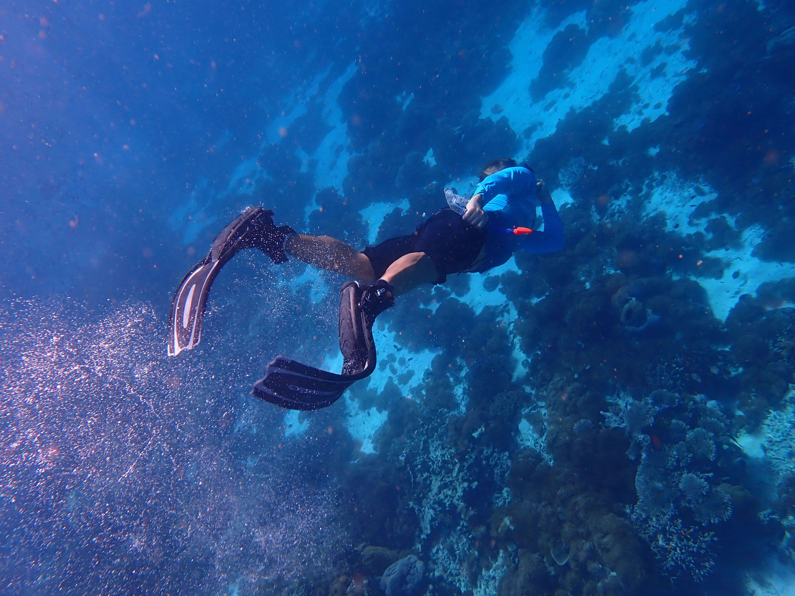
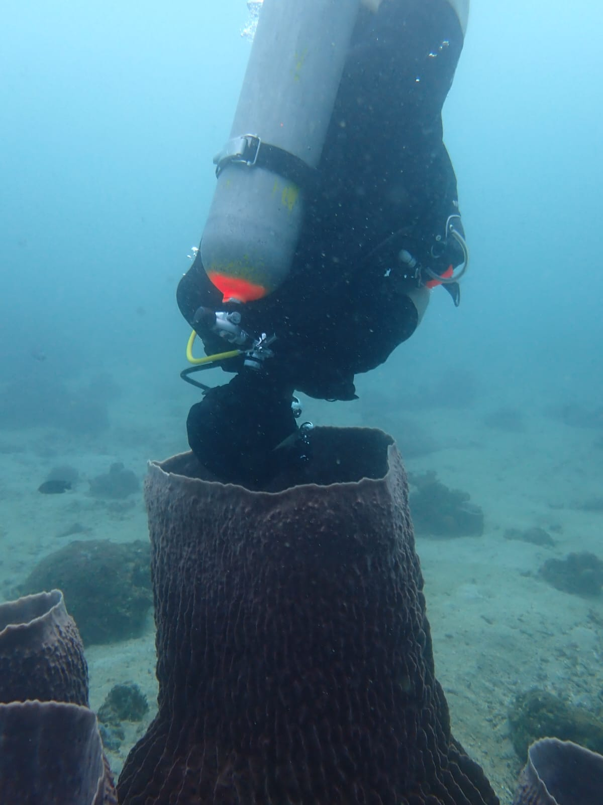

Benvenuti ad Athelas Diving
Servizi di Immersione Professionale & Formazione
Il Significato di "Athelas"
Il nostro nome si ispira ad Athelas, l'erba leggendaria del "Re" della Terra di Mezzo di J.R.R. Tolkien. Questa pianta mistica, nota per le sue straordinarie proprietà curative, serve come perfetta metafora per la nostra filosofia di immersione:
L'Esperienza Straordinaria
Proprio come Athelas esiste in un regno di fantasia e meraviglia, l'immersione ci trasporta in un universo subacqueo straordinario. Qui incontrerai creature uscite direttamente dalla fantascienza - dalle più belle alle più strane forme di vita.
Guarigione e Pace Interiore
Come Athelas, che poteva guarire anche le malattie più oscure, l'immersione offre una guarigione profonda per la mente e l'anima. Il mondo subacqueo ha una capacità unica di far tacere i tormenti interiori e portare una pace profonda.
La Magia della Natura
Athelas ci ricorda che la vera magia risiede nel mondo naturale che ci circonda. Attraverso l'immersione, scopriamo l'incredibile bellezza e meraviglia degli ecosistemi marini, riconnettendoci con i regni più incantevoli della natura.
Ad Athelas Diving, crediamo che ogni immersione sia un'opportunità di sperimentare questa magia naturale, trovare una guarigione interiore, e scoprire il mondo straordinario sotto le onde.
I Nostri Servizi

Corsi di Immersione

Iniziazione Subacquea

Tour Guidati

Ecologia Acquatica & Lavori Subacquei

Consapevolezza Subacquea

Fotografia Subacquea
Immersione Sana
Vuoi immergerti in modo sano? L'immersione subacquea è un metodo scientificamente provato per migliorare la tua salute fisica e mentale. Ecco come ogni immersione ti beneficia, con prove da ricerche peer-reviewed e studi di esperti:
Brucia fino a 700 calorie all'ora
L'immersione subacquea è un'attività fisica da moderata a vigorosa che può bruciare calorie significative attraverso il nuoto, la gestione delle attrezzature e la regolazione termica.
Rafforza il cuore e i polmoni
Le attività di immersione regolari migliorano la forma cardiovascolare e la funzione respiratoria attraverso tecniche di respirazione controllata ed esercizio aerobico moderato.
Riduci stress e ansia attraverso la respirazione controllata
I pattern di respirazione ritmica e l'ambiente subacqueo immersivo creano uno stato naturale simile alla meditazione che promuove il rilassamento e la riduzione dello stress.
Migliora il sonno e l'equilibrio emotivo
La combinazione di sforzo fisico, riduzione dello stress ed esposizione agli ambienti naturali contribuisce a una migliore qualità del sonno e al benessere emotivo.
Sviluppa la forza del core e la flessibilità con movimenti a basso impatto
La resistenza naturale dell'acqua fornisce un allenamento completo del corpo mentre la galleggiabilità riduce lo stress articolare, rendendo l'immersione un'ottima opzione di esercizio a basso impatto.
Vivi l'Esperienza
Immergiti nel magico mondo subacqueo con le nostre esperienze di immersione uniche:
- Tour di immersione guidati in località incontaminate
- Avventure di immersione notturna
- Incontri con la vita marina
- Sessioni di fotografia subacquea
- Esperienze di immersione personalizzate
Formazione Professionale
Con una vasta esperienza di immersione, porto una ricchezza di conoscenze ed esperienza ad ogni immersione. Le mie qualifiche attuali includono:
- Certificazione PADI Rescue Diver
- Certificazione Emergency First Response (EFR)
- Certificazione SDI Dive Master
- Qualifica Dive Leader
Attualmente in formazione per diventare istruttore SDI/TDI certificato, mi impegno in uno sviluppo professionale continuo e a condividere la mia passione per l'immersione con gli altri.

Immergiti nell'Avventura

Vivi la magia del mondo subacqueo con le nostre attività di immersione divertenti e coinvolgenti. Che tu sia un principiante o un subacqueo esperto, creiamo avventure memorabili che combinano sicurezza, educazione e puro divertimento.
Contattaci
Interessato ai nostri servizi? Contattaci per discutere delle tue esigenze di immersione.
Contattaci